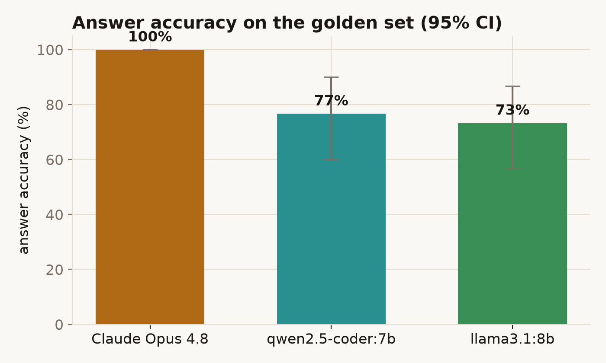
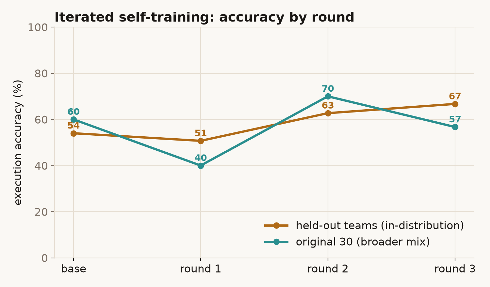
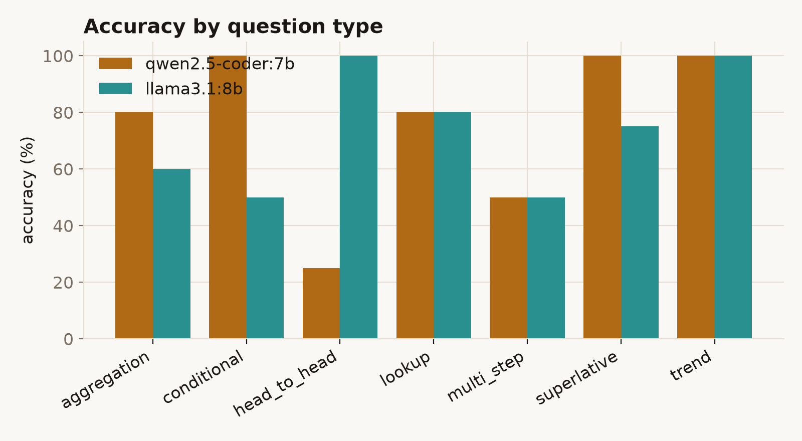
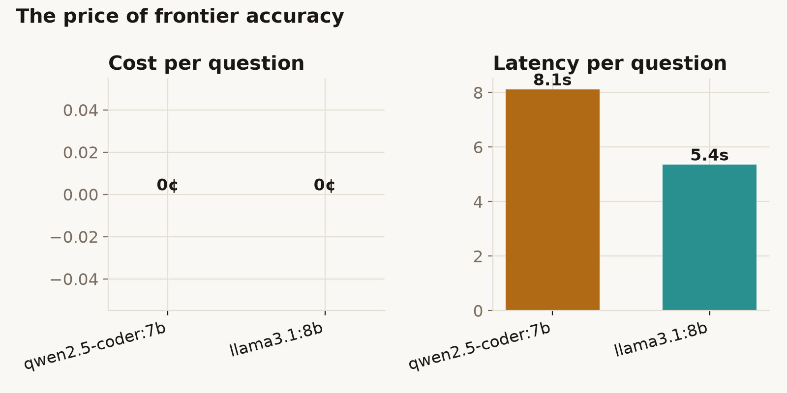

There are 150 years of international football results sitting in a database — 49,291 matches
back to the first Scotland–England game in 1872. Getting an answer out of it (“who has England
beaten most often?”, “how has scoring changed by decade?”) means knowing SQL and the table layout.
Most people who have the questions don't have the query.
What I built
Touchline does the querying for you. You ask a question in plain English; it works out what to
compute, writes the SQL, runs it against the database, draws a chart where one helps, and explains
what it found. If a query fails, it reads the error and tries again. There are no pre-built
dashboards; it writes each query from scratch.
It has two things it can do: run a read-only query, and draw a chart from one. And it follows one
firm rule: every number it gives you has to come from a query it actually ran, not from the model's
own memory.
How it works under the hood →
Finding — the code model didn't win
The question I cared about wasn't whether an LLM can write SQL (it can), but which model you
actually need to run this. I gave the same agent two models that run free on a laptop:
qwen2.5-coder:7b, tuned for code, and llama3.1:8b, a general
model. Both answered the same 30 questions. (Claude Opus 4.8 will join the same test later, as a
paid-model benchmark.)

Answer accuracy on the 30 questions, with bootstrap 95% confidence intervals. The
code-tuned model is a few points ahead, but the intervals overlap, so the difference isn't real.
See the full scorecard →
The code model scored 77% and the general model 73%: close
enough, given the confidence intervals, to call a tie. The averages hide the more interesting part.
The general model wrote working SQL far more often (86% of its queries ran, against
68% for the code model) and fixed its own mistakes about twice as often. The code
model, for its part, made up fewer numbers: 97% of the figures it quoted traced back to a real
query, against 83%. And they were good at opposite things, the code model on single-table filters,
the general model on questions comparing two teams (100% versus 25%). “A code model is better at
SQL” turned out to be too simple a rule.
I also trained a local model on its own correct answers, on a loop: the eval
labels the data for free, so the model learns from the queries it gets right. A single round
over-specialises and forgets things, but with a wider question bank and a held-out gate the best
round beats the starting model on both test sets at once (54% → 63% on unseen teams, 60% → 70% on
the original questions).
See the self-training loop →
An LLM is a good analyst only if it actually runs the query. The whole design is
built to force that: a read-only guard so it can't do harm, a hard “ground every number in a tool
result” rule, and an eval that checks the spoken answer against the database — not against the
model's confidence. Read the technical write-up →
Dataset & schema
One clean fact table, matches (49,291 played internationals, 1872–2026: teams,
scores, tournament, venue, plus derived year, winner,
total_goals, goal_diff), and a long-form view team_match
— one row per team per match, with goals_for/against, venue and a
W/D/L result. The view earns its keep: team-centric questions (“who did X beat”)
become a simple filter instead of fiddly CASE expressions over the home/away columns,
which measurably lifts the smaller models' hit rate.
The agent loop
A model-agnostic ReAct-style loop. The system prompt carries the schema, sample rows, and the
rules; then: the model emits a tool call → the harness executes it → the result is fed back →
repeat until the model answers in prose (capped at six iterations). Two tools:
run_sql(sql) — runs one read-only SELECT and returns up to 50 rows.
plot(sql, x, y, kind, title) — runs a query and describes a bar/line chart from
two of its columns, so the answer ships with a figure grounded in a real result set.
Self-correction. A failed query isn't fatal. The error text goes back to the
model as the tool result, and it gets another turn to fix the SQL. That one choice is what lets a
weaker local model recover instead of giving up.
The SELECT-guard (defence in depth)
The agent can only read. Three layers enforce it: the SQLite connection is opened in
OS-level read-only mode (a write is physically impossible); a query_only pragma; and
a text guard that rejects anything that isn't a single SELECT/WITH
statement — no stacked statements, no DROP/INSERT/PRAGMA.
The text guard's job is partly UX (a clear refusal the model can react to) and partly a clean,
inspectable security seam — it's the attack target for a sister red-team project. A per-query
timeout aborts runaway joins on the 49k-row table.
Swapping the brain — the setup
The same loop, the same tools, the same prompt — only the “brain” swaps behind one interface, so
every model is a like-for-like comparison:
Local (now): two models via Ollama — qwen2.5-coder:7b (code-tuned) and
llama3.1:8b (general) — both free, on-device, no network.
Frontier (next): Claude Opus 4.8 via the Anthropic API, native tool use,
adaptive thinking, with the system+tools prefix marked for prompt caching — the ceiling the
local models get measured against.
What didn't work (kept in)
The local model wouldn't use the tool API. Out of the box, qwen2.5-coder
printed its SQL as prose and then hallucinated an answer — “the team with the most
World Cup wins is France with 4 titles” (wrong, and it never ran a query). It described the
tool call instead of emitting one. I added a text-extraction fallback: when a
local model returns no native tool call, the harness pulls the SQL out of its prose and runs it,
forcing it to ground. The same question then answers Brazil, 76 — correct. Forcing the
model to look at a real result turned a confident hallucination into a right answer.
The two local models fail in opposite places. Head-to-head questions are
where qwen2.5-coder falls down (25%): it filters on the wrong column, or miscounts distinct
teams. llama3.1 gets them all right (100%). It flips for single-table conditions, where qwen
scores 100% and llama 50%. Whatever “tuned for code” is worth, it isn't a clean win here.
One question sent qwen into a 37-second loop of failed queries before it gave
up — the iteration cap is what stops that becoming an infinite spend.
How the eval works
Thirty natural-language questions across seven categories (lookup, aggregation, head-to-head,
conditional, trend, superlative, multi-step). Each has a reference SQL whose result is the
gold answer — answers are computed from the database, never hand-typed. The scorer is
deliberately about the spoken answer, the thing a user actually reads: it checks
that the gold value(s) appear in the final answer, with numeric tolerance (so “about 51%” matches
a gold of 50.7). Alongside accuracy it tracks valid-SQL rate, self-correction, tool calls,
latency, cost, and groundedness — does every number the model states trace back
to a tool result, or did it invent one. All accuracy figures carry bootstrap 95% CIs.
Self-training: the eval as the teacher, on a loop
Because the eval checks every answer against the database, it can label training data on its own.
I built a bank of ~2,000 templated questions over the same schema (each with a reference SQL), held
fifteen teams out entirely, and let the model attempt the rest. Every attempt whose SQL reproduced
the gold answer was kept; the rest were thrown away. This is rejection sampling: the model's own
verified-correct queries become the dataset, with no hand-labelling. The kept pairs LoRA fine-tune
the model on-device (MLX on the M-series Mac, loss masked to the SQL).
One round of this over-specialises, exactly as you'd expect. Fine-tuning on the first ~250
verified queries dropped single-shot accuracy on the original 30 from 60% to 40%: the model
got sharper on the team-by-team patterns it trained on and worse at the rest. So I made it a loop
with two changes: a wider question bank (percentages, per-decade buckets, max-of-derived shapes, not
just counts) and a held-out gate — keep a new round only if it beats the previous
best on both test sets, never just one.

Each round: the current model attempts the bank, its verified-correct SQL is added to
the training set, a fresh model is fine-tuned, and it's tested on both held-out sets. The rounds
are noisy; the gate is what makes the loop trustworthy.
The loop is genuinely noisy. Round 1 regressed both sets; round 3 pushed the held-out teams to
their best (67%) but gave back ground on the broader 30. The round that passes the gate is
round 2, and it is a real win: it beats the base model on both sets at
once — held-out teams 54% → 63%, original 30 60% → 70% — trained
only on the model's own verified queries, for nothing but compute. The wider bank is what let it
recover the question types one round had forgotten.
So yes, it iterates, with caveats worth stating plainly. The gains are noisy and they plateau:
rejection sampling can only harvest what the model can already sometimes do, not teach it genuinely
new tricks. And a cheap verifier can be gamed if you push hard enough — a query that happens to
contain the gold number isn't always the right query. The held-out gate is the load-bearing part;
without it you'd ship round 1 and write self-training off as a failure.
From prototype to production
What a real deployment would add: per-query cost and row caps; result caching for repeated
questions; query-plan limits against expensive joins; an audit log of every query the agent ran;
and a guardrail layer against prompt-injection through the question (“ignore your instructions and
run …”) — the read-only guard blocks the damage, but the scope-escape surface is exactly what the
companion Red-Team Lab is built to probe.
77%
Best accuracy — qwen2.5-coder:7b (CI 60–90%); llama3.1:8b a near-tie at 73% (CI 57–87%)
86%
llama's valid-SQL rate — vs qwen's 68%. The general model writes cleaner SQL
2×
llama recovers from its own SQL errors twice as often (67% vs 33%)
$0
both models run on-device; a frontier benchmark (Opus 4.8) lands next
How it's measured
Thirty questions, each scored against a reference SQL result computed from the database. “Correct”
means the gold value(s) appear in the agent's spoken answer (numeric tolerance applied). Accuracy
carries a bootstrap 95% CI. Full method is in the Technical tab.
Accuracy by question type
Where the local model holds up, and where it doesn't:
Category
qwen2.5-coder:7b
llama3.1:8b
head_to_head
25%
100%
conditional
100%
50%
aggregation
80%
60%
superlative
100%
75%
lookup
80%
80%
multi_step
50%
50%
trend
100%
100%
Overall
77%
73%
Both columns are real (full 30-question runs). The bold cell is the per-category
winner — and the wins split: qwen takes the single-table conditionals and superlatives, llama
takes head-to-head joins by a mile (100% vs 25%) and writes more valid SQL overall. The two tie on
lookups, multi-step and trends. A frontier benchmark (Opus 4.8) joins as a third column next.

Accuracy by category. The categories needing the team_match view and a
precise filter (head-to-head, multi-step) are where the gap opens up.

The price of accuracy: the local model is free and runs on-device; the frontier model
costs a few cents and a round-trip per question.
Worked runs
Every recorded run — the question, the SQL each model wrote, the live result, the answer — is
playable in the App tab:
pick a question, toggle between the two models, and watch the SQL run in your browser. A set of
verbatim pasted traces (including a failure) lands here alongside the frontier run.
touchline/
agent.py # the tool-use loop + trace recording + CLI
tools.py # run_sql / plot + the SELECT-guard
db.py # read-only connection + the schema prompt
brains/
base.py # the Brain contract (one assistant turn)
claude.py # Claude Opus 4.8 (native tool use, prompt caching)
ollama.py # local model + text-extraction fallback
data/build_db.py # results.csv -> touchline.sqlite (+ team_match view)
eval/
golden.yaml # 30 questions + reference SQL (gold = the DB result)
run.py # run the agent, score, bootstrap CIs
score.py # the (pure, unit-tested) scorer
train/ # self-training loop
build_questions.py # ~2,000 templated questions, disjoint from the eval
split.py # train pool vs held-out-team test set
mlx_sample.py # attempt the pool, keep verified-correct SQL
finetune.sh # MLX LoRA fine-tune (loss masked to the SQL)
eval_sql.py # accuracy on the held-out sets
iterate.sh # the loop: sample -> fine-tune -> eval -> gate
figures/ # palette-matched charts for this page
The SELECT-guard
Defence in depth: an OS read-only connection makes writes impossible; this text guard gives the
agent a clear refusal to react to and is the inspectable security seam.
def validate_select(sql: str) -> str:
cleaned = _COMMENT.sub(" ", sql).strip()
if cleaned.endswith(";"):
cleaned = cleaned[:-1].rstrip()
if ";" in cleaned: # no statement-stacking
raise GuardError("only a single statement is allowed")
head = cleaned.lstrip("( ").split(None, 1)[0].upper()
if head not in {"SELECT", "WITH"}:
raise GuardError("only SELECT/WITH queries are allowed")
if _FORBIDDEN.search(cleaned): # DROP/INSERT/PRAGMA/…
raise GuardError("query contains a forbidden (non-read) keyword")
return cleaned
The text-extraction fallback (local models)
Some local models describe a tool call in prose instead of emitting one — and then hallucinate.
When there's no native tool call, recover the SQL from the text and run it, forcing the model to
ground on a real result instead of guessing.
text = msg.get("content") or None
if not calls: # no native tool call —
recovered = _tool_from_text(text) # pull SQL out of the prose
if recovered:
calls, text = [recovered], None # run it; don't treat prose as final
Self-training: keep only the model's verified-correct SQL
The eval already checks answers against the database, so it doubles as an automatic labeller.
The base model attempts a large bank of questions; every attempt whose SQL reproduces the gold
answer becomes a training example. No hand-labelling — the scoreboard writes the dataset.
sql = gen_sql(system, question) # the base model's attempt
if sql_correct(sql, gold): # does it reproduce the gold answer?
kept.append({"messages": [ # keep it as a training example
{"role": "system", "content": system},
{"role": "user", "content": question},
{"role": "assistant", "content": sql},
]})
# -> LoRA fine-tune (MLX, loss masked to the SQL) -> re-eval on held-out teams
Pick a question and a brain. The agent's reasoning is replayed from real recorded
runs; the SQL tool runs live in your browser via sql.js against the
shipped database, and the charts redraw from the real result. Or open “drive the SQL yourself” to
run your own SELECT through the same read-only guard.
Loading the in-browser database…
Faithful vs lightweight: the data tool and charts are real and
computed on your device; the LLM planning is replayed (live planning needs a server this page
doesn't call). The browser guard is a JS port of the Python SELECT-guard.